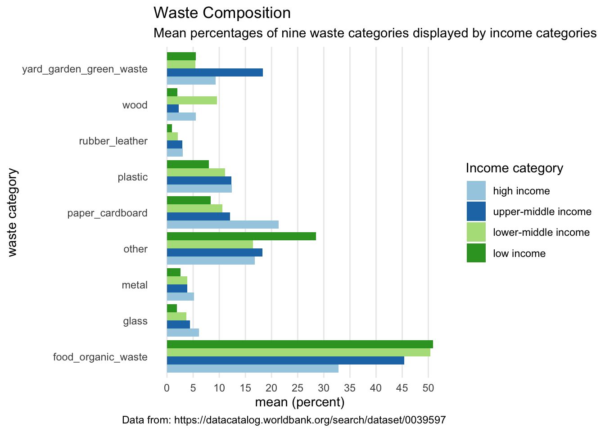
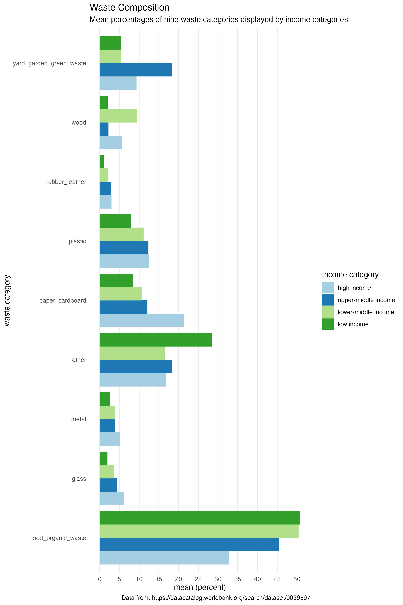

library(tidyverse)
library(lubridate)Untitled
Part 1: Import data
- Use the
read_csv()function to import the ‘msw-generation-and-composition-by-income.csv’ and assign it to an object with a name of your choice.
waste_data <- read_csv("data/raw_data/msw-generation-and-composition-by-income.csv")Part 2: Vector coersion
Starting with the data object you imported, use the pipe operator and the
mutate()function to convert theincome_catvariable from a variable of type character to a variable of type factor. Define the factor levels yourself and store them in a separate object with a name of your choice.Assign the created dataframe to an object with a name of your choice.
levels_income_cat <- c("high income",
"upper-middle income",
"lower-middle income",
"low income")
waste_data_fct <- waste_data %>%
mutate(income_cat = factor(income_cat, levels = levels_income_cat))Part 3: From wide to long
- Starting with the data object you created in Part 2, use the
pivot_longer()function to convert the dataframe from a wide to a long format. Apply the following:
- bring all columns from
food_organic_wastetoyard_garden_green_wasteinto a long format - send the variable names to a column named “waste_category”
- send the values of the variables to a column names “percent”
Remove all NAs from the
percentvariableAssign the created dataframe to an object with a name of your choice.
waste_data_long <- waste_data_fct %>%
pivot_longer(cols = food_organic_waste:yard_garden_green_waste,
names_to = "waste_category",
values_to = "percent") %>%
drop_na(percent)Part 4: Summarise data
As in the exercises for week 12, I have stored the data that I would have expected at this point and import it here.
- Use R functions to check whether you have come to the same result by identifying if the number of of columns and rows are equal between the object from Part 3 and the
waste_data_longobject you just imported.
waste_data_long <- read_rds("data/intermediate_data/msw-generation-and-composition-by-income-long.rds")
# You can perform your checks in this code chunkFill in the blanks
Starting with
waste_data_long, group the data byincome_catwaste category, then create a summary table containing the mean of percentages (call this mean_percent).Execute the code and observe the output in the Console. Would you publish this table in a report in this format?
Use the pipe operator to add another line of code which uses the
pivot_wider()function to bring the data from a long format into a wide format using names for variables fromwaste_categoryand corresponding values frommean_percentExecute the code and observe the output in the Console. Would you publish this table in a report in this format?
Use the pipe operator to add another line of code which uses a function of your choice to display the table in a layout in the rendered report. Show no digits.
waste_data_long_mean <- waste_data_long %>%
group_by(income_cat, waste_category) %>%
summarise(mean_percent = mean(percent))
waste_data_long_mean %>%
pivot_wider(names_from = waste_category,
values_from = mean_percent) %>%
knitr::kable(digits = 0)| income_cat | food_organic_waste | glass | metal | other | paper_cardboard | plastic | rubber_leather | wood | yard_garden_green_waste |
|---|---|---|---|---|---|---|---|---|---|
| high income | 33 | 6 | 5 | 17 | 21 | 12 | 3 | 6 | 9 |
| upper-middle income | 45 | 4 | 4 | 18 | 12 | 12 | 3 | 2 | 18 |
| lower-middle income | 50 | 4 | 4 | 16 | 11 | 11 | 2 | 10 | 5 |
| low income | 51 | 2 | 3 | 28 | 8 | 8 | 1 | 2 | 6 |
Part 5: Data visualisation
- Reproduce the plot that you see as an image. Hint: To get those bars displayed next to each other, use the
geom_col()function with theposition = position_dodge()argument. The colors don’t have to be exactly the same colours, just not the default color scale.
ggplot(data = waste_data_long_mean, aes(x = mean_percent, y = waste_category, fill = income_cat)) +
geom_col(position = position_dodge()) +
labs(title = "Waste Composition",
subtitle = "Mean percentages of nine waste categories displayed by income categories",
x = "mean (percent)",
y = "waste category",
fill = "Income category",
caption = "Data from: https://datacatalog.worldbank.org/search/dataset/0039597") +
scale_x_continuous(breaks = seq(0, 50, 5)) +
scale_fill_brewer(type = "qual", palette = 3) +
theme_minimal() +
theme(panel.grid.minor = element_blank(),
panel.grid.major.y = element_blank())
ggsave(filename = "figs/fig-01-mean-waste-composition-by-income.png", width = 8, height = 12)